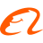

Game
OpenRSI Index
Real model-development tasks with fixed verifiers, fixed GPU budgets and a human baseline. The agent can change the method, never the judge.
Up to 20,864 H100-h per run
Focus on Recursive Self-Improvement (RSI) · Amazon
Research skill can be learned. We train models to propose, predict and run the experiments that make AI better, and we study agents that evolve their own harness from experience.

LM2LM Qwen3.8-27B + RL53.72 GPT-6-sol + 300 records21.63GPT-6-sol20.19
GPT-6-sol + 300 records21.63GPT-6-sol20.19Qwen3 family held out from proposer training and RWM groundingLM2LM ↗
 Claude Opus 50.90GPT-6 Astra0.88GPT-5.6 Sol0.88GPT-5.6 Luna0.87GPT-5.6 Terra0.86
Claude Opus 50.90GPT-6 Astra0.88GPT-5.6 Sol0.88GPT-5.6 Luna0.87GPT-5.6 Terra0.86 DeepSeek V3.20.86
DeepSeek V3.20.86 GLM-50.80
GLM-50.80Best model without records: 0.62 · −78% selection regret on Qwen3 from other environmentsRWM ↗
Data mix, schedule and ablations chosen by the systemReport ↗
01 / AI Researchers Primary program
Agents can propose experiments far faster than anyone can afford to run them. So we treat research as search under a fixed compute budget, and learn each piece of it: the game, a value estimate, a policy, and the harness that runs the campaign.
Game
Real model-development tasks with fixed verifiers, fixed GPU budgets and a human baseline. The agent can change the method, never the judge.
Up to 20,864 H100-h per run
Value
Predict an experiment's gain before paying for it, using past experimental records in context, and carry that experience across environments.
2,653 real records · 9 environments · 171k H100-h
Policy
Train the proposer with RL against the world model, and keep that reward honest with periodic real runs.
33% lower data-generation cost than 300-record ICL
Harness
The system around the researcher for multi-week campaigns: an immutable substrate, memory-free workers, and a meta agent that rewrites only the search policy.
0.86 vs 0.87 human #1 at 30B
Failed experiments are not wasted budget. They are world-model training data.
Pre-training, post-training and generation are not separate directions. They are places a researcher works, with a budget attached.
| Stage | Task | What the researcher changes | Budget per run |
|---|---|---|---|
| Pre-training | Marin-Scaling-Ladder | Optimizer, validated from 550M to 2.5B | 18,432 H100-h |
| Post-training | Qwen-122B-RL-Merge | Synthesized RL tasks | ≈20,864 H100-h |
| Generation | GPIC Leaderboard | Recipe for one more training pass | 5,815 H100-h |
| LM development | LM2LM suite | 8 autoregressive and diffusion LM families | ≈10 GPU-h |
Turn your own research into an environment in about an hour with the RSI-Anything agent. Contributors receive authorship. Contribute ↗
02 / Self-Evolving Agents
Keep the model frozen and let the agent improve its prompts, skills, memory and workflow from experience. We ask when that helps, when it hurts, and how to keep it working on open-ended task streams.
Accuracy / pass rate, %. Baseline is the same model without the evolved harness.Code ↗
Writing harness updates and benefiting from them are separate skills. Across seven evolvers, best and worst differ by at most 3.1pp; mid-tier agents gain most.
Compile one-shot execution context into reusable skills. Wins every baseline on CL-Bench, τ-bench and WebArena-Infinity.
A harness tree with solve-time routing for long-running streams. 80.9% vs 50.8% next best on PolyBench prediction markets. Code ↗
Coordinate memory construction and retrieval, with verification and repair before memories are kept.
The case for improving the system around the model as its own axis of progress.
03 / News